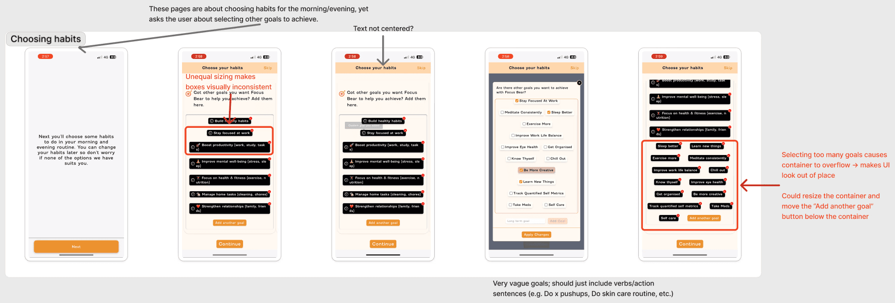
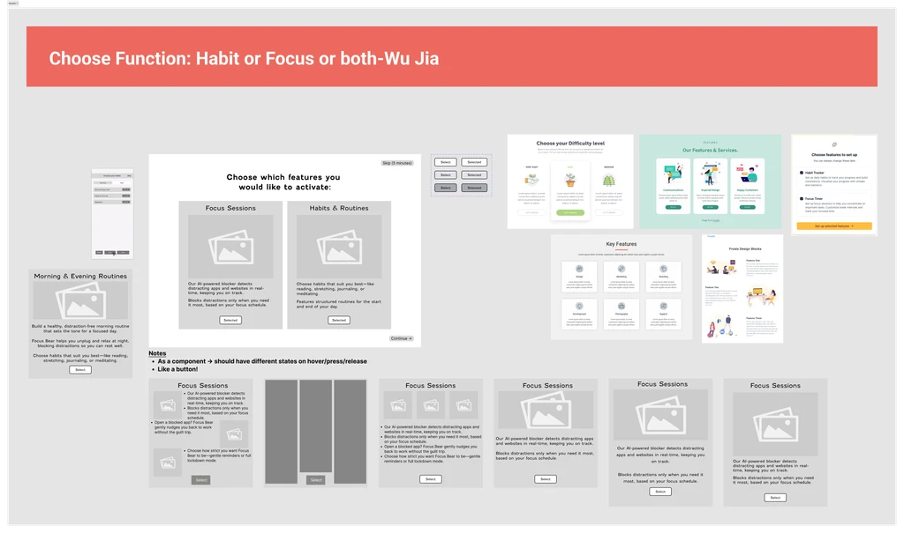
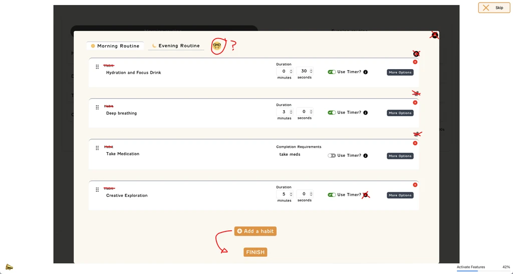

Problem
The app was suffering from high drop-off rates due to a poor onboarding experience
Case Study
My experience working at a neurodivergent-first productivity app.
The app was suffering from high drop-off rates due to a poor onboarding experience
I conducted usability testing and iterative development using Miro and Figma to cut down the onboarding process by 40%.
Designed an AI-assisted feedback platform that improves feedback quality, transparency, and trust between students and staff.
Click here for a more comprehensive overview.
The main issue we tackled was that many users were not making it through onboarding.
I planned and conducted multiple usability tests on the onboarding experience across desktop and iOS, including:
Key issues identified included: onboarding friction, unclear terminology, overwhelming screens, and cognitive overload.
[INSERT IMAGES OF IRL TESTING HERE]

[INSERT SOLUTION HERE]
Based on the insights gathered, I began redesigning the onboarding experience. This comprised of multiple things:
The focal point of my work involved mapping and finalising the end-to-end onboarding user flow, ensuring consistency across desktop and mobile while accounting for platform constraints.The images below showcase the progression of the overall flow after multiple iterations.
[INSERT ITERATION CAROUSEL HERE]
A big issue discovered during testing was that users wanted only the focus sessions but not the habits feature, or vice versa. They expressed their discontent at having to sit through instructions for a feature they did not intend on using, thus potentially contributing to the high dropoff rates experienced.
To remedy this, I introduced a "feature activation" screen that acts as a checkbox for the features they would like to setup during onboarding. It allows for further personalisation of their experience while also mitigating the pain of unnecessary navigation.


Another major issue uncovered was the habits setup screen that caused endless confusion for various users. There were mulitple UI inconsistencies such as duplicated icons, unclear signage, and redundant elements.

These inconsistencies were addressed in the subsequent screen redesigns, making high-traffic elements more visible and reduces overall confusion.
[INSERT CAROUSEL HERE]
My work at Focus Bear has resulted in the following improvements to the app:
While not all designs were shipped during the internship, they informed ongoing iterations and product decisions. These designs were passed onto the next batch of interns for polish and eventual implementation.
This internship made me realise: